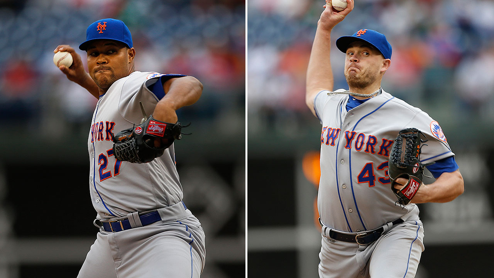
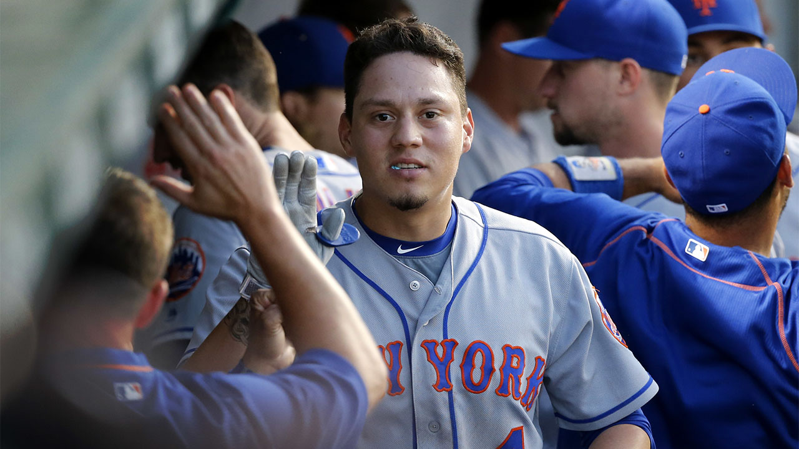
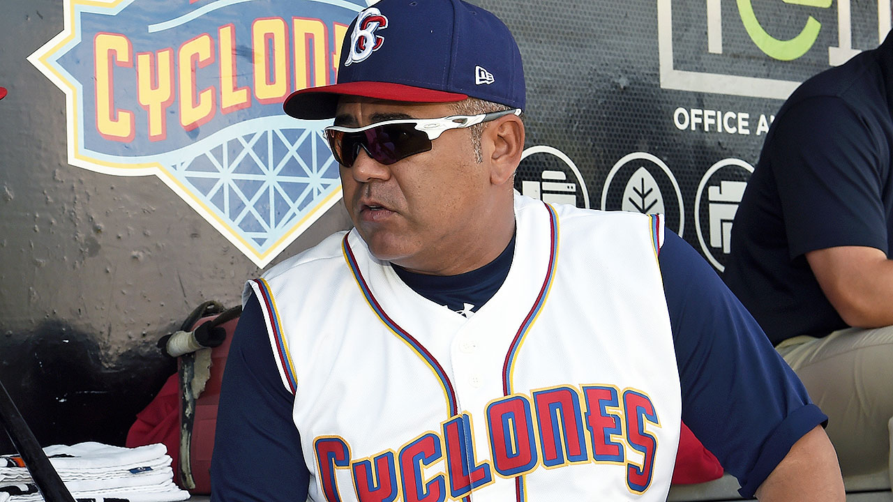
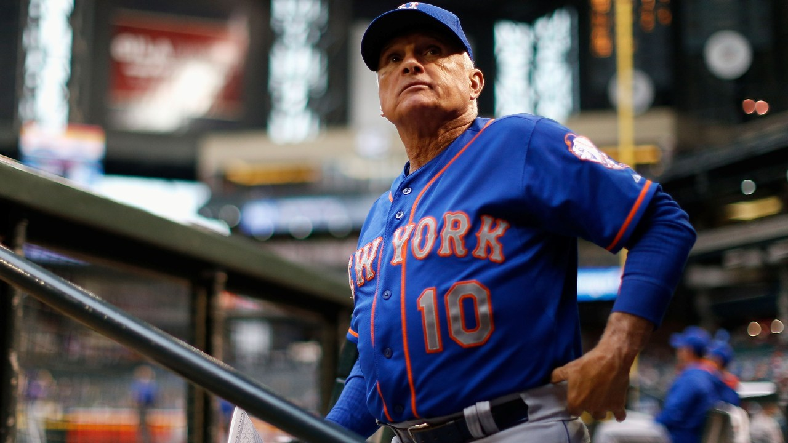
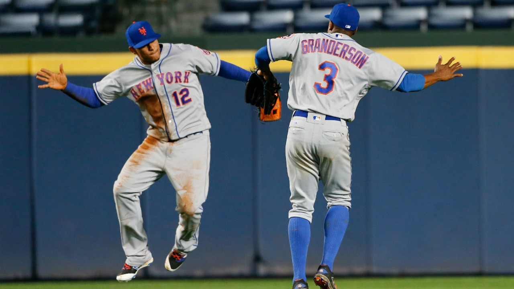

Bulpen de los Mets Dependerá en Grande de Jeurys Familia

Tomando en cuenta que al gerente general Sandy Alderson no le gusta invertir grandes sumas de dinero en el bullpen de su equipo, vale pena darle un vistazo al trabajo que han realizado los relevistas de los Mets en las últimas temporadas. En el 2014, el bullpen de Nueva York terminó cuarto en la Liga Nacional en efectividad. En el 2015, fueron séptimos. Y el verano pasado, terminaron terceros, gracias a una efectividad de 3.51 que acompañaron con 569 ponches en 525 innings.
La fórmula de los Mets no es un secreto: han utilizado todo lo que han podido al cerrador dominicano Jeurys Familia. Esa debería volver a ser la estrategia en el 2017, incluso si Familia pierde tiempo debido a una posible suspensión por violar la nueva política contra la violencia doméstica de Major League Baseball.
Pero los Mets no podrán depender sólo de Familia. Para que tengan éxito utilizando básicamente al mismo bullpen que tuvieron el año pasado, Nueva York necesita que otros relevistas den un paso al frente.
"Tenemos que asegurarnos de tener un grupo fuerte", dijo el manager Terry Collins recientemente. "Tenemos que tener distintas opciones".
Aunque Familia continúa siendo la piedra angular, gracias a 94 salvados y 2.20 de efectividad en las últimas dos temporadas, el preparador Addison Reed podría ser la pieza más importante del bullpen en abril. Según algunos números, Reed tuvo una mejor temporada que Familia en el 2016, cuando ponchó a 10.5 bateadores cada nueve innings y dejó 1.97 de efectividad. Si Familia termina siendo suspendido, Reed será el cerrador.
Es después de allí que se empantana la situación. Aunque es probable que los Mets consigan al menos a otro relevista veterano antes de que comience la campaña, lo más probable es que completen la mayor parte del bullpen con piezas internas. Eso significa que el dominicano Hansel Robles, Josh Edgin, Josh Smoker, Erik Goeddel y otros más tendrán roles significativos. En un escenario ideal, al grupo se sumaría Jerry Blevins, aunque el zurdo es agente libre y su regreso no está garantizado.
Para llenar los espacios vacíos, los Mets van a aprovechar la profundidad de su rotación. Después de los primeros cuatro abridores del equipo hay un grupo de tres pitchers (Robert Gsellman, Seth Lugo y Zack Wheeler) cuyo puesto en la rotación no está garantizado. Algunos ejecutivos de los Mets han dicho que han discutido abiertamente la posibilidad de pasar a Wheeler al bullpen, aunque les preocupa los potenciales problemas de salud que una medida así podría causar. También es posible que quien inicie relevando sea Gsellman o Lugo, quien podría asumir el puesto de preparador mientras Reed cierra.
Entre todos los departamentos de los Mets, el bullpen sigue representando la menor certeza de cara a los entrenamientos primaverales. Pero mientras Familia y Reed estén lanzando bien, el cuerpo de relevistas debería volver a destacar como uno de los mejores del béisbol.
Por Anthony Reyes
Gary Sánchez y Wilmer Flores recibirán el premio Thurman Munson

NUEVA YORK -- El receptor dominicano de los Yanquis, Gary Sánchez, el receptor de los Giants Victor Cruz y el torpedero venezolano de los Mets Wilmer Flores recibirán el premio Thurman Munson.
Los tres serán homenajeados durante la 37ma edición anual de la cena Munson el 7 de febrero en Nueva York.
Munson, el ex capitán de los Yanquis, murió en un accidente aéreo en 1979 mientras practicaba aterrizajes y despegues en un aeropuerto cercano a su hogar en Canton, Ohio. Los premios son en honor al éxito y la inspiración dentro y fuera del terreno de juego.
El evento es a beneficio de la Fundación AHRC New York City, que asiste a niños y adultos con discapacidades.
Compartir
Por Associated Press
Edgardo Alfonzo será el manager de Clase-A Brooklyn de los Mets

NUEVA YORK - La sucursal Clase-A Brooklyn de los Mets anunció el jueves que el ex tercera base venezolano, Edgardo Alfonzo, será su nuevo manager en 2017.
Convocado al Juego de Estrellas, ganador del Bate de Plata y quien pasó ocho de sus 12 temporadas de Grandes Ligas jugando por los Mets, Alfonzo tuvo su mejor año con el equipo campeón de la Liga Nacional en el 2000, cuando bateó .324 con 25 jonrones y un porcentaje de embasarse más slugging (OPS) de .967.
El venezolano de 43 años de edad ocupa la quinta posición en la historia de la franquicia en hits y carreras anotadas, sexto en promedio de bateo y dobles, séptimo en bases por bolas recibidas y carreras remolcadas, y noveno puesto en jonrones.
Alfonzo regresó a trabajar con los Mets como embajador del club en 2013, convirtiéndose en miembro del cuerpo de instructores de Brooklyn un año más tarde. También fungió como instructor especial en ligas menores, y vio acción como jugador hasta el 2012 en la pelota invernal venezolana.
p
Por Buster Olney de ESPN
Los Mets llegan al 2017 con la urgencia de ganar con su formidable rotación

NUEVA YORK -- Imagínese uno de los rosters más talentosos de Grandes Ligas completamente saludable, recargado y listo para competir por el título. Imagínese también miles de fanáticos gritando y vitoreando una vez más en el Citi Field para un partido de postemporada en octubre.
Quizás sean sueños para un equipo de los Mets con muchas interrogantes de cara al 2017. Quizás sea poco realista en una liga que destaca otros jóvenes contendientes como los Cachorros y los Nacionales - ni hablar de unos Bravos advenedizos. Pero Nueva York cree que su propio roster se encuentra en un punto excelente, listo para competir por un título de la Serie Mundial.
Para llegar hasta ahí, los Mets simplemente necesitan encontrar las respuestas correctas a cinco preguntas urgentes de cara al 2017:
1. ¿Cuál es el futuro de Terry Collins?
A pocos días de que se terminara la temporada pasada, Collins dijo que no estaba seguro si seguirá dirigiendo después del 2017, el último año de su contrato actual. Ahora a los 67 años de edad, el capataz de los Mets ha cumplido con más de lo que realísticamente era posible cuando firmó con el equipo luego de la campaña del 2010. Pero el deseo de ganar un título de Serie Mundial todavía se siente.
Collins quiere alcanzarlo desesperadamente. Además, no esperará por siempre; el manager ha dicho previamente que no desea dirigir a los 70 años de edad.
Quizás la pregunta más urgente para contestar sea si Collins podrá salir del béisbol profesional bajo sus propios términos. Aunque las lesiones en la primera mitad del 2016 cambiaron el panorama para Collins, quizás no tenga tanta suerte si vuelve a batallar.
2. ¿Cómo luce un Yoenis Céspedes cómodo?
Lo único que frenó a Céspedes en el período de la agencia libre fue su reputación mixta. Algunos equipos, incluyendo el de Nueva York, se preguntaban cómo respondería el jardinero cubano a un contrato multianual, considerando que sus dos mejores años como ligamayorista llegaron previo a la agencia libre. Céspedes tiene historial de no poner un esfuerzo completo en ciertas jugadas, en sentarse en algunos juegos, de frecuentar el campo de golf. Todas esas inquietudes se mantendrán hasta que el oriundo de Campechuela demuestre que sean infundadas.
Pero los Mets creen en Céspedes lo suficiente para comprometerse a un contrato de US$110 millones, con las expectativas de que el cubano sea su mejor jugador ofensivo. Si lo es, y se mantiene saludable, la ofensiva contará con una oportunidad decente de ser mejor de lo que fue en el 2016.
3. ¿Terminó el tiempo de David Wright de jugar en la tercera base todos los días?
Por segundo año consecutivo, Nueva York llegará a los Entrenamientos de Primavera con lo que el equipo considera un tercera base suplente de "buena fe". El año pasado fue el venezolano Wilmer Flores, quien tuvo problemas contra lanzadores diestros antes de cederle el trabajo al dominicano José Reyes. Este año será Reyes, quien se desempeñó bastante bien ante la ausencia de Wright en el 2016.
Pero Wright se mantiene como el Plan A de los Mets; todavía es el capitán, corazón y alma de este equipo. Aunque Wright jugó apenas 75 partidos combinados en las últimas dos temporadas, los Mets creen que podrá ser un contribuidor potente de mantenerse saludable. El equipo no está contando con él exactamente - incluso Wright reconoce que no está seguro de lo que todavía puede hacer a los 34 años de edad. Pero Nueva York confía en que un Wright saludable puede ayudar al club a alcanzar la altura que espera.
De Wright no poder superar la estenosis espinal, adicional a los problemas en el cuello o algo aún sin conocer, Reyes será quien ocupará la antesala. De llegar a ese punto, los Mets estarían seguros de que Wright nunca más estaría completamente sano.
4. ¿Cuán saludable podría estar la rotación de los Mets?
Existe un aire optimista entre los fanáticos de los Mets que a pesar del número de lesiones que sostuvieron los lanzadores la temporada pasada, la rotación estará saludable en el 2017. Y todavía el historial médico del béisbol no ha comprobado que haya un mejor indicador para las lesiones del futuro que las del pasado.
Los Mets estuvieron sumergidos en otro verano de aperturas omitidas y brazos enfermos. Pero es una preocupación legítima. La cirugía a la que fue sometido Matt Harvey en julio donde se le extrajo una costilla, por ejemplo, tiene relativamente poco precedente en la historia del béisbol. Harvey será quien podrá demostrar que no sólo pudo superarla, sino que también puede regresar a ser el jugador estrella de antes.
Steven Matz nunca ha lanzado una temporada de más de 141 innings en su vida y perdió tiempo de juego debido a lesiones constantes en el codo, hombro y problemas en la espalda. Jacob deGrom también ha experimentado molestias menores en las últimas tres temporadas, mientras que Zack Wheeler no ha lanzado en las Mayores desde el 2014.
Entonces ahí está Noah Syndergaard, el joven de 24 años de edad que se convirtió en la roca de la rotación de Nueva York. Syndergaard lanzó bien duro, lo que incrementa el factor de riesgo de lesionarse. Los Mets necesitan que se mantenga saludable más que cualquier otro lanzador.
¿Se mantendrá este grupo de lanzadores en el montículo? Los Mets harán todo lo que esté a su alcance y poder para reducir las probabilidades, confiando en toda la medicina moderna, nutrición y los métodos de fuerza y condición
5. ¿Por cuánto tiempo la ventana de los Mets se mantendrá abierta?
Cuando Nueva York llegó a la Serie Mundial detrás de una de las rotaciones más jóvenes y brillantes del 2015, parecía que su ventana para competir se mantendría abierta por años. Pero las lesiones han puesto la capacidad del club en duda, mientras que la negatividad de los Mets en retar el tope salarial del béisbol ha dejado al roster con huecos blandos.
Definitivamente, si su pitcheo se mantiene saludable, los Mets competirán por un puesto en la postemporada. Pero le han agregado poco a un equipo que por poco queda fuera de la postemporada en el 2016. ¿Y si las lesiones atacan nuevamente? El sistema de fincas de los de Queens ya no se clasifica entre los mejores del béisbol.
Quizás los Mets sumen piezas en la fecha límite de cambios. Quizás se mantengan saludables y luchen por un puesto de la postemporada. Pero considerando dónde una vez se pararon, al equipo le gustaría ganar un título lo más pronto posible, mientras que Harvey, Syndergaard, deGrom y otros se mantengan empleados. Este tipo de oportunidades raramente dura mucho.
Por Anthony Reyes
Los Mets preferirían soluciones internas para el jardín central

Por Anthony DiComo / MLB.com | Diciembre 20, 2016
NUEVA YORK -- Aunque los Mets han contemplado ser "creativos" en torno a la pradera central, incluyendo un posible cambio para adquirir al estelar jardinero central Andrew McCutchen, sigue siendo poco probable que Nueva York busque realizar esa clase de transacción.
Una fuente describió las negociaciones de los Mets con los Piratas por McCutchen como "mínimas", clasificando el canje como algo con pocas posibilidades de hacerse realidad. Para adquirir a un jugador de la talla de McCutchen, quien estará dos años más bajo control contractual del equipo, el conjunto de Queens tendría que ceder piezas listas para las Grandes Ligas -- incluyendo tal vez al guardabosque Michael Conforto, un abridor o las dos cosas.
Nueva York no está interesado en invertir tanto en un jardinero central, como lo demostró al no buscar los servicios de Dexter Fowler -- un agente libre que firmó con los Cardenales por cinco años y US$82.5 millones. Por lo contrario, los Mets anticipan llegar a los Entrenamientos de Primavera con Curtis Granderson y el dominicano Juan Lagares compartiendo tiempo en el bosque central. Conforto también practicaría en dicha posición y vería acción allí.
Los Mets creen que las alternativas fuera de la organización no son mejores que las que tienen en su propio roster.
Por eso, aunque los neoyorquinos continuarán atendiendo cualquier clase de oferta desde ahora hasta los entrenamientos, sus objetivos durante la temporada muerta han cambiado. El club espera desprenderse del jardinero Jay Bruce y su salario de US$13 millones antes de los Entrenamientos de Primavera, con una fuente pronosticando que un canje llegaría antes del Año Nuevo. Jon Paul Morosi de MLB.com informó el lunes que los Mets y los Azulejos siguen en negociaciones por Bruce o Granderson, aunque los directivos de Nueva York prefieren quedarse con Granderson debido a sus capacidades defensivas en el jardín central.
Granderson patrulló la pradera central en 36 encuentros la temporada pasada, impresionando al club con su agilidad a los 35 años de edad. Llegando a su temporada de 36 años de edad y al último año de su contrato, Granderson piensa que puede jugar dicha posición con consistencia. La novena de Queens tiene previsto sustituirlo a finales de los juegos con Lagares, quien tiene un Guante de Oro en su haber y sería el titular cada vez que se enfrenten los Mets a un abridor zurdo.
"La verdad es que hasta yo me sorprendí", reconoció Granderson hace poco sobre sus capacidades en el bosque central. "A comienzos no estaba seguro si podía hacerlo por esa cantidad de tiempo. Y luego cuando lo continué haciendo, me di cuenta de que si hago lo mismo que en el jardín derecho, no tendré problemas en la pradera central".
Por Kieth Law de ESPN
Noah Syndergaard listo para abrir en el Día Inaugural por los Mets

Pero eso no significa que el derecho se considere como el as de la rotación.
"No puede decir que el líder del grupo. Creo que todos somos líderes en diversas formas y nos apoyamos mutuamente", declaró Syndergaard en la sede de entrenamientos de primavera del equipo el domingo, un día antes de la fecha que los lanzadores y receptores deben reportarse. "Es como una hermandad dentro del equipo. Es realmente fabuloso ser parte de ello".
Sin embargo, varios factores de importancia respaldan a Syndergaard para que el manager Terry Collins lo designe como el primer abridor de los Mets este año.
Antes que todo, es un pitcher joven, fuerte, consistente y sin un historial de lesiones.
En un equipo con una de las rotaciones que más bajas tuvo el año pasado, Syndergaard fue el último en pie al cabo de la campaña.
Los derechos Jacob deGrom y Matt Harvey padecieron molestias desde el comienzo, ambos con lesiones en la primavera. Sus temporadas se frenaron tras someterse a cirugías.
El zurdo Steven Matz sufrió con un rebelde espoleón oseao y no pudo completar la campaña por una dolencia en el hombro.
Además, el derecho Zack Wheeler se sometió a una cirugía reconstructiva del codo en marzo de 2015, tuvo una aparición en un juego de ligas menores y no volvió a lanzar más.
Syndergaard es apodado "Thor", pero podría recibir otro alias: el "Robusto".
"Es un tremendo honor el que Terry me mencione (como abridor del juego inaugural). Estoy para responder al llamado", dijo Syndergaard, quien se recupera de la bronquitos y gripe que contrajo en el invierno.
Cuando Collins necesitó de un abridor para el juego de comodines de la Liga Nacional ante los Gigantes de San Francisco, el piloto recurrió a su mejor carta.
Syndergaard, de 24 años, protagonizó un duelo de pitcheos con el zurdo Madison Bumgarner. No permitió un hit de San Francisco hasta el sexto y cubrió siete innings en blanco, con 10 ponches. Los Mets sucumbieron 3-0.
Durante el receso, Syndergaard añadió más musculatura, fue más cuidadoso con su dieta y consumió más proteína.
Explicó que su régimen de entrenamientos apunta a su objetivo, que es mejorar la marca de 14-9, efectividad de 2.60 y 218 ponches la pasada temporada.
Aunque sea algo inconcebible, también quiere lanzar más fuerte. Su recta alcanzó con frecuencia las 100 millas por hora y promedió las 97.9 con ese pitcheo. Ese fue la cifra más alta en las mayores por parte de un abridor.
Por Kieth Law de ESPN